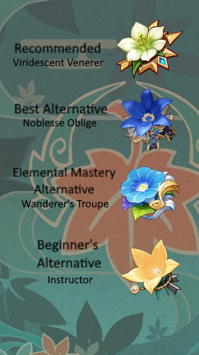
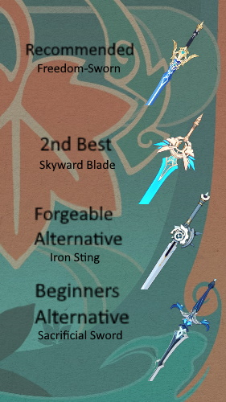

Kazuha Card

Best Artifacts

Best Weapons
| Rarity |  5 Stars 5 Stars |
Weapon |  Sword Sword |
|---|---|---|---|
| Element |  Anemo Anemo |
Nation | Inazuma |
| Birthday | October 29th | Gender | Male |
| Constellation | Acer Palmatum | Release Date | June 29, 2021 |
| Garyuu Bladework (Normal Attack) |
|---|
| Normal Attack: Perform up to 5 rapid strikes.
Charged Attack: Consumes a certain amount of Stamina to unleash 2 rapid sword strikes. Plunging Attack: Plunges from mid-air to strike the ground below, damaging opponents along the path and dealing AoE DMG upon impact. Plunging Attack: Midare Ranzan: When a Plunging Attack is performed using the effects of the Elemental Skill Chihayaburu, Plunging Attack DMG is converted to Anemo DMG and will create a small wind tunnel via a secret blade technique that pulls in nearby objects and opponents. |
| Chihayaburu (Elemental Skill) | Unleashes a secret technique as fierce as the rushing wind that pulls objects and opponents towards Kazuha's current position before launching opponents within the AoE, dealing Anemo DMG and lifting Kazuha into the air on a rushing gust of wind.
Press: Can be used in mid-air. Hold: Charges up before unleashing greater Anemo DMG over a larger AoE than Press Mode. Plunging Attack: Midare Ranzan: Within 10s of remaining airborne after casting Chihayaburu, Kazuha can unleash a powerful Plunging Attack known as Midare Ranzan. When a Plunging Attack is performed using the effects of the Elemental Skill Chihayaburu, Plunging Attack DMG is converted to Anemo DMG. On landing, Kazuha creates a small wind tunnel via a secret blade technique that pulls in nearby objects and opponents. Midare Ranzan's DMG is considered Plunging Attack DMG. |
 Kazuha Slash (Elemental Burst) Kazuha Slash (Elemental Burst) |
The signature technique of Kazuha's self-styled bladework — a single slash that strikes with the force of the first winds of autumn, dealing AoE Anemo DMG. The blade's passage will leave behind a field named "Autumn Whirlwind" that periodically deals AoE Anemo DMG to opponents within its range.
Elemental Absorption: If Autumn Whirlwind comes into contact with Hydro/Pyro/Cryo/Electro, it will deal additional elemental DMG of that type. Elemental Absorption may only occur once per use. |
 Soumon Swordsmanship (Passive) Soumon Swordsmanship (Passive) |
If Chihayaburu comes into contact with Hydro/Pyro/Cryo/Electro when cast, Chihayaburu will absorb that element and if Plunging Attack: Midare Ranzan is used before the effect expires, it will deal an additional 200% ATK of the absorbed elemental type as DMG. This will be considered Plunging Attack DMG. Elemental Absorption may only occur once per use of Chihayaburu. |
| Poetics of Fuubutsu (Passive) | Upon triggering a Swirl reaction, Kaedehara Kazuha will grant all party members a 0.04% Elemental DMG Bonus to the element absorbed by Swirl for every point of Elemental Mastery he has for 8s. Bonuses for different elements obtained through this method can co-exist. |
| Cloud Strider (Passive) | Decreases sprinting Stamina consumption for your own party members by 20%. Not stackable with Passive Talents that provide the exact same effects. |
| Scarlet Hills | Decreases Chihayaburu's CD by 10%. Using Kazuha Slash resets the CD of Chihayaburu. |
|---|---|
 Yamaarashi Tailwind Yamaarashi Tailwind |
The Autumn Whirlwind field created by Kazuha Slash has the following effects: Increases Kaedehara Kazuha's own Elemental Mastery by 200. Increases the Elemental Mastery of characters within the field by 200. The Elemental Mastery-increasing effects of this Constellation do not stack. |
| Maple Monogatari | Increases the Level of Chihayaburu by 3. Maximum upgrade level is 15. |
 Oozora Genpou Oozora Genpou |
When Kaedehara Kazuha's Energy is lower than 45, he obtains the following effects: Pressing or Holding Chihayaburu regenerates 3 or 4 Energy for Kaedehara Kazuha, respectively. When gliding, Kaedehara Kazuha regenerates 2 Energy per second. |
 Wisdom of Bansei Wisdom of Bansei |
Increases the Level of Kazuha Slash by 3. Maximum upgrade level is 15. |
 Crimson Momiji Crimson Momiji |
After using Chihayaburu or Kazuha Slash, Kaedehara Kazuha gains an Anemo Infusion for 5s. Additionally, each point of Elemental Mastery will increase the DMG dealt by Kaedehara Kazuha's Normal, Charged, and Plunging Attack by 0.2%. |